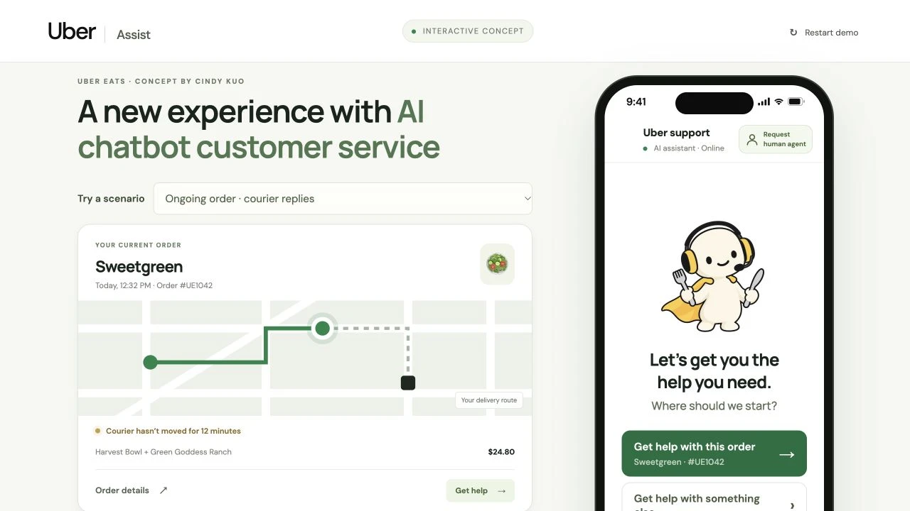

Customer need
Help me understand my choices.
Use direct language and meaningful actions, without requiring customers to decode the support system.
Carnegie Mellon · Course 601 · Independent concept
A UX design concept for Uber Eats support, developed in a CMU course and later refined into an interactive prototype. I focused on clear choices, emotional reassurance, and an easier transition from AI to a human.

Design outcome
From service blueprint and sketches to a working interaction prototype. I refined the support journey around simpler decisions, clearer feedback, and a visible human-support option.
Independent student concept, not affiliated with Uber. Orders, refunds, and support responses in the prototype are simulated.
01 / The service problem
Getting help should not become a second problem.
My project planning identified a frustrating support journey: repetitive responses, unclear next steps, and a disconnected handoff to a person. I mapped the service to connect what the customer sees with the support processes behind it.

Customer need
Use direct language and meaningful actions, without requiring customers to decode the support system.
Customer need
Acknowledge the situation and preserve the customer’s explanation when they ask for a person.
02 / Explore the design
Select a moment to explore the design decisions. This condensed walkthrough shows how I connect the interface, language, and customer’s sense of control.
An ongoing order gives help a useful starting point. A separate path lets customers explain a different issue in their own words.
Where should we start?
Get help with this order →Get help with something else →Your delivery is taking longer than expected. What would you like to do?
A clear set of actions, with room for an issue the system has not anticipated.
Make the consequences visible before asking for a commitment.
Amounts depend on the simulated scenario. Confirmation comes before the action.
Jamie · Human support
I have your order details and the conversation so far. You don’t need to repeat it.
A distinct human identity replaces the AI identity at handoff.
Thanks for your patience.
Your feedback is valuable to us.Optional feedback, without a scorecard comparing customers or an exaggerated performance claim.
Illustrated walkthrough adapted from the prototype. Choose a chapter to change screens; the phone’s actions are explanatory examples.
03 / Sketch, learn, refine
The course prototype changed as feedback revealed confusion around prompts, labels, and the amount of information on each screen.
Early drafts offered too many choices. I simplified the first decision to help with the detected issue or describe a different one.
I clarified when an action continues with AI and made the human-support option easier to find. The later interactive build uses different identities for AI and human messages.
The course exploration included resolution-time and comparison information. I removed those elements in favor of a supportive character, a clear message, and optional feedback.


04 / Interactive refinement
A static sequence can hide the difficult moments. I continued the concept as an interactive prototype to explore what happens when a courier replies, when they do not, or when a customer needs help with a past order.
Different scenarios make the choices and consequences concrete.
Show the current situation, explain a proposed action, and confirm what happened.
Preserve the customer’s words and action history through a human handoff.

Visual design
I directed a rounded, gender-neutral character with a headset, a small cape, and food-service cues. A dedicated head-and-headset portrait keeps the chat avatar readable at a small size.
UX writing
Supportive wording works alongside clear choices and action summaries. It should never substitute for explaining what will happen.
05 / Reflection & next steps
Prototyping helped me see the assumptions hidden inside a “simple” support flow.
The central tradeoff was simplicity versus enough information to feel supported. I learned to refine the choices, the language, and the handoff together, instead of polishing each screen in isolation.
What this demonstrates
I can move from a service problem to a tangible experience: map the journey, sketch alternatives, respond to feedback, and refine the interactions that connect the screens.
I would test whether people can identify who they are talking to, understand the consequences before confirming an action, and reach a human without repeating their story. The project has not established improvements in resolution time, satisfaction, or trust.
Sources: my CMU Course 601 project-planning and prototyping assignments, plus subsequent prototype iterations. The planning document’s proposed interview sample and success measures are plans, not achieved results. Course feedback informs the iteration story; the interactive implementation and character artwork were developed with AI assistance under my design direction.
A good conversation is a good start
I’m exploring UX research opportunities, and related roles in product insights, customer experience, and strategy.